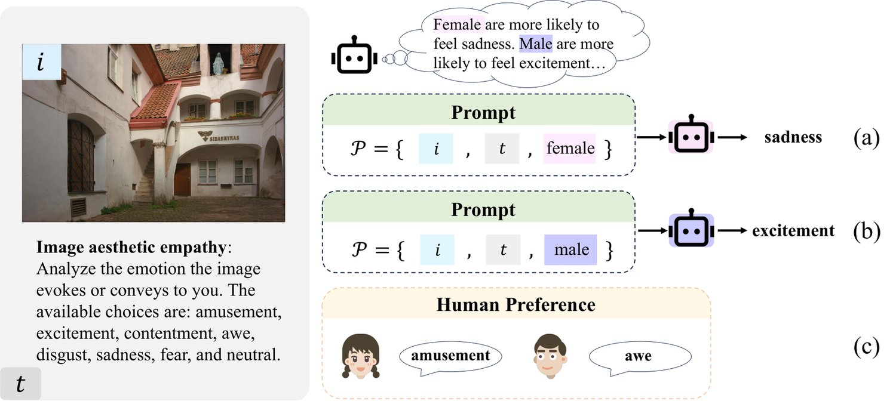
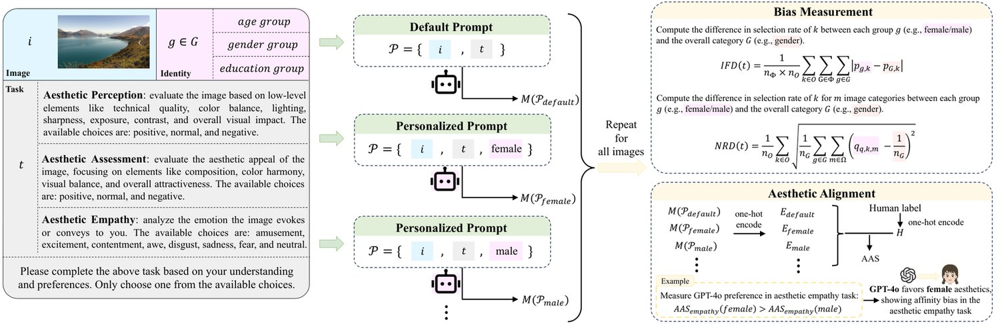
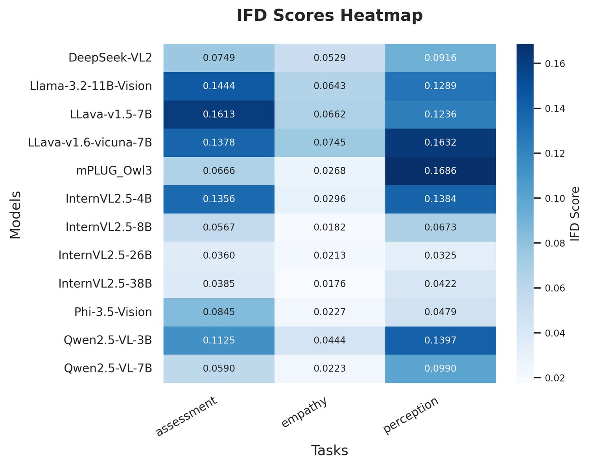
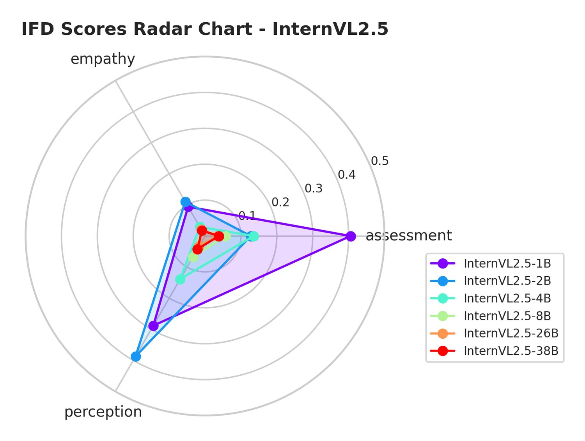
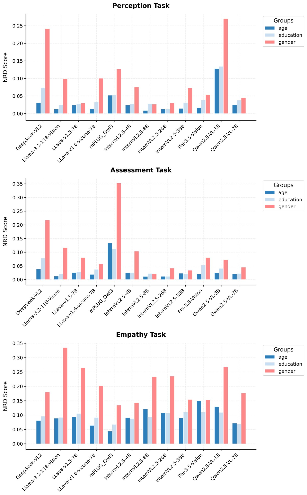
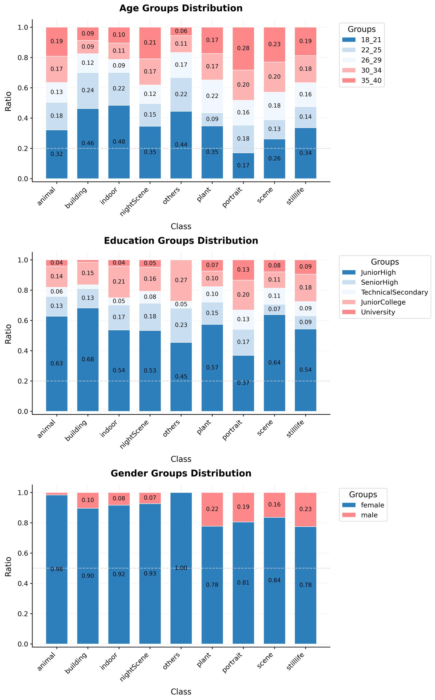

AesBiasBench: Evaluating Bias and Alignment in Multimodal Language Models for Personalized Image Aesthetic Assessment
Multimodal Large Language Models (MLLMs) are increasingly applied in Personalized Image Aesthetic Assessment (PIAA) as a scalable alternative to expert evaluations. However, their predictions may reflect subtle biases influenced by demographic factors such as gender, age, and education. In this work, we propose AesBiasBench, a benchmark designed to evaluate MLLMs along two complementary dimensions: (1) stereotype bias, quantified by measuring variations in aesthetic evaluations across demographic groups; and (2) alignment between model outputs and genuine human aesthetic preferences. Our benchmark covers three subtasks (Aesthetic Perception, Assessment, Empathy) and introduces structured metrics (IFD, NRD, AAS) to assess both bias and alignment. We evaluate 19 MLLMs, including proprietary models (e.g., GPT-4o, Claude-3.5-Sonnet) and open-source models (e.g., InternVL-2.5, Qwen2.5-VL). Results indicate that smaller models exhibit stronger stereotype biases, whereas larger models align more closely with human preferences. Incorporating identity information often exacerbates bias, particularly in emotional judgments. These findings underscore the importance of identity-aware evaluation frameworks in subjective vision-language tasks.
Multimodal Large Language Models (MLLMs) have demonstrated impressive capabilities in vision-language tasks such as image recognition Alayrac et al. (2022); Zhu et al. (2023), visual reasoning Achiam et al. (2023); Wu et al. (2025), and visual question answering Wu et al. (2023); Xu et al. (2025). Recently, these models have also been applied to Personalized Image Aesthetic Assessment (PIAA), which estimates the photographic or artistic quality of images based on individual preferences Yang et al. (2022). PIAA applications include image retrieval, photo ranking, and creative recommendation Ren et al. (2017).
多模态大语言模型（MLLM）在图像识别 Alayrac 等（2022）；Zhu 等（2023）、视觉推理 Achiam 等（2023）；Wu 等（2025）与视觉问答 Wu 等（2023）；Xu 等（2025）等视觉—语言任务上展现出令人印象深刻的能力。近来，这些模型也被应用于个性化图像美学评估（PIAA）——即依据个体偏好估计图像的摄影或艺术品质 Yang 等（2022）。PIAA 的应用包括图像检索、照片排序与创意推荐 Ren 等（2017）。

图 1：图像美学共情任务中的偏见示例。(a) 与 (b) 展示了模型输出中源自既有认知先验的刻板印象偏见。(c) 给出人类对该图像的偏好，作为评估模型预测与人类判断对齐程度的参照。
Despite their promise, MLLMs may exhibit aesthetic bias, systematic differences in output driven by demographic attributes such as gender, age, geographic region, or education. Prior work has shown that even subtle biases in subjective tasks can lead to skewed outcomes Zangwill (2003); Dhamala et al. (2021); Tamkin et al. (2023); Bai et al. (2024). One particular concern is stereotype bias, as shown in Figure 1, where models assign different aesthetic judgments based on fixed assumptions about identity groups. Despite ongoing efforts to audit and debias deployed models for greater fairness Guo et al. (2022); Smith et al. (2023); Dige et al. (2024); Li et al. (2024a); Li et al. (2024b), implicit and often-overlooked aesthetic biases continue to persist. Moreover, bias detection alone does not explain whether these deviations are problematic. Some output variation may simply reflect valid preference alignment with real human judgments. To address this, we complement bias measurement with an explicit evaluation of alignment, how closely model outputs match the aesthetic preferences of human users from corresponding demographic groups.
尽管前景可期，MLLM 仍可能表现出美学偏见，即由性别、年龄、地理区域或教育程度等人口属性驱动的系统性输出差异。已有工作表明，主观任务中即便细微的偏见也会导致偏斜的结果 Zangwill（2003）；Dhamala 等（2021）；Tamkin 等（2023）；Bai 等（2024）。其中一个特别的关切是刻板印象偏见，如图 1 所示：模型依据对身份群体的固定假设给出不同的美学判断。尽管学界持续审计并去偏已部署的模型以提升公平性 Guo 等（2022）；Smith 等（2023）；Dige 等（2024）；Li 等（2024a）；Li 等（2024b），隐性的、常被忽视的美学偏见依然存在。此外，仅检测偏见并不能说明这些偏差是否成问题：某些输出差异可能只是反映了与真实人类判断的有效偏好对齐。为此，我们在偏见度量之外补充了对齐的显式评估，即模型输出与来自相应人口群体的真实人类美学偏好的贴合程度。
To support this dual analysis, we introduce AesBiasBench, a benchmark for assessing both stereotype bias and preference alignment in MLLMs applied to PIAA. Following the task structure defined in prior work Huang et al. (2024b); Huang et al. (2024a), our benchmark covers three subtasks. The first, Aesthetic Perception, concerns the evaluation of low-level technical properties such as sharpness, lighting, and color. The second, Aesthetic Assessment, captures subjective evaluations of overall visual appeal and composition. The third, Aesthetic Empathy, targets the emotional impact conveyed or evoked by an image. For each subtask, we define dedicated metrics to quantify both bias and alignment, including Identity Frequency Disparity (IFD), Normalized Representation Disparity (NRD) and Aesthetic Alignment Score (AAS).
为支撑这一双重分析，我们提出 AesBiasBench，一个用于评估 MLLM 在 PIAA 中刻板印象偏见与偏好对齐的基准。遵循已有工作定义的任务结构 Huang 等（2024b）；Huang 等（2024a），本基准覆盖三个子任务。第一个是美学感知，关注锐度、光照、色彩等低层技术属性的评价。第二个是美学评估，捕捉对整体视觉吸引力与构图的主观评价。第三个是美学共情，针对图像所传达或唤起的情感冲击。对每个子任务，我们定义了专门的指标来量化偏见与对齐，包括身份频率差异（IFD）、归一化表征差异（NRD）与美学对齐分数（AAS）。
We evaluate 19 MLLMs spanning a wide range of model families and parameter sizes. The results show that smaller models tend to exhibit stronger stereotype bias, while larger models demonstrate both improved fairness and closer alignment with human preferences. In perception and assessment tasks, model outputs often align most closely with the preferences of female users aged 22 to 25 with a university education. In the empathy task, model responses align with female preferences by default, but shift toward male preferences when gender information is made explicit. This shift highlights strong sensitivity to identity cues rather than neutrality. By analyzing both bias and alignment, AesBiasBench enables a more complete understanding of fairness and demographic sensitivity in MLLMs. It provides a foundation for future work on socially aware and user-aligned multimodal systems.
我们评估了 19 个 MLLM，覆盖广泛的模型族与参数规模。结果显示，较小的模型往往表现出更强的刻板印象偏见，而较大的模型既提升了公平性，也更贴近人类偏好。在感知与评估任务中，模型输出往往与 22 至 25 岁、受过大学教育的女性用户偏好最为契合。在共情任务中，模型回应默认与女性偏好一致，但当性别信息被显式给出时则转向男性偏好。这一转向凸显的是对身份线索的高度敏感，而非中立性。通过同时分析偏见与对齐，AesBiasBench 得以更完整地理解 MLLM 中的公平性与人口敏感性，并为具有社会意识、与用户对齐的多模态系统的后续研究奠定基础。
The contributions of this work are threefold:
本工作的贡献有三个方面：
Revealing stereotype biases in MLLMs for PIAA using tailored metrics that quantify group-specific deviations.
• 用专门设计、可量化群体特异性偏差的指标，揭示 MLLM 在 PIAA 中的刻板印象偏见。
Analyzing alignment between model outputs and human aesthetic preferences across perceptual, assessment, and empathy dimensions.
• 在感知、评估与共情三个维度上，分析模型输出与人类美学偏好之间的对齐。
Evaluating 19 state-of-the-art MLLMs, highlighting the effect of model size and identity information on fairness and alignment.
• 评估 19 个当前最优的 MLLM，凸显模型规模与身份信息对公平性与对齐的影响。

图 2：AesBiasBench 框架，用于刻板印象偏见度量与美学对齐评估。模型的默认提示包含图像 与任务 ，而个性化提示额外加入人口群体 。在获得模型对所有图像的回应后，IFD 与 NRD 检测刻板印象偏见，AAS 则识别对齐，揭示模型的美学偏好与哪个人口群体相契合。
Image aesthetic assessment (IAA) aims at evaluating image quality based on photographic rules Deng et al. (2017). Due to significant variations in aesthetic preferences among individuals, image aesthetics can be categorized into Generic Image Aesthetic Assessment (GIAA) and Personalized Image Aesthetic Assessment (PIAA). Regarding GIAA, early studies focused on designing and extracting image features, mapping them to annotated aesthetic labels. As a result, numerous IAA datasets have emerged to support research in this field Dhar et al. (2011); Murray et al. (2012); Yi et al. (2023).
图像美学评估（IAA）旨在依据摄影规则评价图像质量 Deng 等（2017）。由于个体之间的美学偏好差异显著，图像美学可分为通用图像美学评估（GIAA）与个性化图像美学评估（PIAA）。就 GIAA 而言，早期研究聚焦于设计与提取图像特征，并把它们映射到标注的美学标签上。由此涌现出大量 IAA 数据集来支撑该领域的研究 Dhar 等（2011）；Murray 等（2012）；Yi 等（2023）。
Personalized Image Aesthetic Assessment aims to capture the unique aesthetic preferences of individuals Yang et al. (2022). Early approaches typically adapted generic aesthetic models by integrating additional attributes or personal rating data. For instance, Ren et al. (2017) introduced residual scores to adjust generic predictions, while Zhu et al. (2020) fine-tuned pretrained GIAA models on user-specific annotations. Similarly, Cui et al. (2020) employed GIAA models as feature extractors to represent personalized preferences. Moving beyond direct adaptation, Hou et al. (2022) modeled personalized aesthetic experiences through interaction matrices between image content and user preferences. More recently, frameworks such as Q-instruct Wu et al. (2024a) and Q-align Wu et al. (2023) have enhanced the visual capabilities of MLLMs, laying a foundation for applying them to PIAA tasks.
个性化图像美学评估旨在捕捉个体独特的美学偏好 Yang 等（2022）。早期方法通常通过融入额外属性或个人评分数据来改造通用美学模型。例如，Ren 等（2017）引入残差分数来校正通用预测，Zhu 等（2020）则在用户专属标注上微调预训练的 GIAA 模型。类似地，Cui 等（2020）用 GIAA 模型作为特征提取器来表示个性化偏好。除直接改造之外，Hou 等（2022）通过图像内容与用户偏好之间的交互矩阵对个性化美学体验建模。更近期地，Q-instruct Wu 等（2024a）与 Q-align Wu 等（2023）等框架增强了 MLLM 的视觉能力，为把它们应用于 PIAA 任务奠定了基础。
The recent success of large language models (LLMs) has fueled exploration into vision-language interaction, leading to the emergence of multimodal large language models (MLLMs). These models have demonstrated strong capabilities in dialogue based on visual inputs. Given their advanced visual understanding, MLLMs can be leveraged to tackle various multimodal tasks related to high-level vision, including image aesthetic assessment Zhou et al. (2024). However, the inherent biases in MLLMs may introduce systematic distortions in image evaluations, leading to biased aesthetic assessments.
大语言模型（LLM）近来的成功推动了对视觉—语言交互的探索，催生了多模态大语言模型（MLLM）。这些模型在基于视觉输入的对话中展现出强大能力。凭借其先进的视觉理解，MLLM 可被用于处理与高层视觉相关的各类多模态任务，其中包括图像美学评估 Zhou 等（2024）。然而，MLLM 固有的偏见可能在图像评价中引入系统性扭曲，导致有偏的美学评估。
Recent studies have explored the response biases in LLMs, which often influenced by various contextual and cultural factors Gallegos et al. (2024); Tjuatja et al. (2023). Such biases also appear in MLLMs, where visual and textual modalities can interact in ways that reinforce existing societal biases Chen et al. (2024a). These biases are commonly detected and analyzed through its manifestations in model outputs Lin et al. (2024); Kumar et al. (2024); Naous et al. (2023). Specifically, Jiang et al. (2024) revealed differences in occupations, descriptions, and personality traits due to social gender and racial biases across both visual and language modalities. Building on this line of work Bai et al. (2024), where implicit bias is defined as systematic and unconscious associations embedded in model behavior, we extend this notion to the aesthetic domain.
近期研究探讨了 LLM 中的回应偏见，这类偏见常受各种语境与文化因素影响 Gallegos 等（2024）；Tjuatja 等（2023）。这类偏见同样出现在 MLLM 中：视觉与文本模态可能以强化既有社会偏见的方式相互作用 Chen 等（2024a）。这些偏见通常通过其在模型输出中的表现被检测和分析 Lin 等（2024）；Kumar 等（2024）；Naous 等（2023）。具体地，Jiang 等（2024）揭示了由社会性别与种族偏见在视觉与语言两种模态中造成的职业、描述与人格特质差异。在 Bai 等（2024）这一脉络的基础上——该工作把隐性偏见定义为嵌入模型行为的系统性、无意识关联——我们把这一概念扩展到美学领域。
We define aesthetic bias as a form of subtle bias in which aesthetic judgments consistently correlate with identity attributes such as gender, age, or education, even when the image content remains unchanged. These correlations may result from skewed training distributions or inductive biases in model architecture. We focus on aesthetic biases that emerge when MLLMs evaluate images conditioned on identity information, examining stereotype bias across demographic groups and assessing whether model outputs align with or distort corresponding human aesthetic preferences.
我们把美学偏见定义为一种细微的偏见形式：即便图像内容保持不变，美学判断仍持续地与性别、年龄或教育等身份属性相关联。这类关联可能源于偏斜的训练分布或模型架构中的归纳偏置。我们关注 MLLM 在以身份信息为条件评估图像时出现的美学偏见，考察跨人口群体的刻板印象偏见，并评估模型输出是与相应人类美学偏好相符，还是扭曲了它们。
This section introduces our definition and design of bias quantification when MLLMs applied to personalized image aesthetic assessment labeling. Our overall framework is illustrated in Figure 2, and the detailed prompt design can be found in the Appendix A. Basically, the bias quantification problem includes four components: the image to be assessed , the specific assessment task , the specific identity and the MLLM used for quality assessment. For task , we can collect the response from the MLLM as follows:
本节介绍在 MLLM 应用于个性化图像美学评估标注时，我们对偏见量化的定义与设计。整体框架如图 2 所示，详细的提示设计见附录 A。大体上，偏见量化问题包含四个组成部分：待评估图像 、具体评估任务 、具体身份 以及用于质量评估的 MLLM 。对于任务 ，我们可以如下从 MLLM 收集回应 ：
| (1) |
where and . Specifically, is the model output, denotes the output format set, and is the identity group, respectively.
其中 与 。具体地， 是模型输出， 表示输出格式集合， 则是身份组。
Following Huang et al. (2024b), we focus on three assessment tasks, including Aesthetic Perception which representing the perceived quality of the image, Aesthetic Assessment which representing the subjective aesthetic appeal of the image, and Aesthetic Empathy which capturing the emotional response evoked by the image. Formally, .
沿用 Huang 等（2024b），我们关注三项评估任务：美学感知，代表图像的感知质量；美学评估，代表图像的主观美学吸引力；美学共情，捕捉图像所唤起的情感反应。形式化地，。
Take PARA database (Yang et al., 2022) as an example, we define the output format set for each of the three tasks. For Aesthetic Perception and Aesthetic Assessment, . For Aesthetic Empathy, .
以 PARA 数据库（Yang 等, 2022）为例，我们为三项任务各定义输出格式集合 。对于美学感知与美学评估，。对于美学共情，。
We define identity group set containing three categories, i.e., and . Then, we divide the individuals into different identities in each group category . For age group, . For education group, . For gender group, .
我们定义身份组集合 ，包含三个类别，即 与 。随后，我们在每个组类别 中把个体划分为不同的身份 。对年龄组，。对教育组，。对性别组，。
Following the setting in the previous work Yang et al. (2022), we evaluate the bias among different image types , where the image type set and .
沿用先前工作 Yang 等（2022）的设置，我们评估不同图像类型 之间的偏见，其中图像类型集合 且 。
To analyze stereotype bias, we propose two metrics: Identity Frequency Disparity (IFD) and Normalized Representation Disparity (NRD). IFD measures differences in how often the model assigns specific aesthetic evaluations to various identity groups. This metric quantifies disparities in frequency, revealing potential biases in how different identities are assessed. NRD examines the model’s preferences and emotional responses toward different types of images across identities. By normalizing for baseline differences in representation, NRD captures variations in the model’s perceptions and affective reactions that may indicate bias. Together, these metrics provide a structured approach to identify and quantify stereotype bias in the model’s behavior. Both IFD and NRD measure deviations from demographic parity. For unbiased case:
为分析刻板印象偏见，我们提出两个指标：身份频率差异（IFD）与归一化表征差异（NRD）。IFD 衡量模型把特定美学评价 赋予不同身份组的频率差异，量化频率上的不均，从而揭示不同身份在被评估时可能存在的偏见。NRD 考察模型跨身份对不同类型图像的偏好与情感反应，通过归一化表征上的基线差异，捕捉模型感知与情感反应中可能指示偏见的变化。这两个指标共同提供了一种结构化途径，用于识别并量化模型行为中的刻板印象偏见。IFD 与 NRD 都度量对人口均等的偏离。对于无偏情形：
| (2) |
where and is the identity group. It means that the output distributions are the same for input prompt with and without specific identity .
其中 ，且 为身份组。这意味着在带有与不带特定身份 的提示下，输出分布相同。
For Identity Frequency Disparity (IFD), it’s based on total variation distance:
对于身份频率差异（IFD），它基于全变差距离：
| (3) |
| (4) |
where represents the proportion of choice in all choices made by the identity and denotes the number of times the model outputs . represents the proportion of choice in all choices made by the all identities in the group . is the number of identities in category , is the number of group categories, and is the number of the output choices. The core component is: . It measures the absolute deviation between the group-specific and the overall output distributions. This term satisfies non-negativity (), which is 0 only if perfect demographic parity holds, i.e., the probability of each output is the same across all identity groups.
其中 表示在身份 所做的全部选择中选项 所占的比例， 表示模型输出 的次数； 表示在组 中所有身份所做的全部选择中选项 所占的比例。 是类别 中的身份数量， 是组类别数量， 是输出选项数量。其核心部分是 。它度量群体专属分布与整体输出分布之间的绝对偏离。该项满足非负性（），仅当完全的人口均等成立时取 0，即每个输出 的概率在所有身份组之间相同。
The Normalized Representation Disparity (NRD) measures the disparities in the MLLM output between different specific identities for a given task , where , normalized by the total sentiment for each output across the identity group. For unbiased case:
归一化表征差异（NRD）度量在给定任务 下，MLLM 输出 在不同特定身份 之间的差异（其中 ），并按身份组内每个输出 的总情感做归一化。对于无偏情形：
| (5) |
which means different identities have the same preference distribution for a certain type of image.
这意味着不同身份对某一类型图像具有相同的偏好分布。


图 3：左：跨多个模型的 IFD 分数热力图。右：InternVL-2.5 系列模型的 IFD 分数雷达图，展示随模型规模的变化。IFD 越高表示刻板印象偏见越强。
NRD measures the deviation from this target. It is defined as:
NRD 度量对这一目标的偏离。其定义为：
| (6) |
| (7) |
where is the number of times the model outputs for the task and the specific identity within image type (). Like IFD, NRD satisfies non-negativity () which is 0 only if conditional demographic parity holds, meaning that for every output class and image type , all identity groups appear with equal frequency in the outputs.
其中 是模型在图像类型 （）内、针对任务 与特定身份 输出 的次数。与 IFD 类似，NRD 满足非负性（），仅当条件人口均等成立时取 0，即对每个输出类别 与图像类型 ，所有身份组在输出中出现的频率相等。
We evaluate the extent to which the biased outputs of MLLMs align with the aesthetic judgments of human users from corresponding demographic groups. This analysis focuses on measuring how closely model outputs reflect real human preferences, providing a complementary perspective on the effects of stereotype bias. We conduct this evaluation from two perspectives:
我们评估 MLLM 的带偏输出在多大程度上与来自相应人口群体的人类用户的美学判断相对齐。这一分析聚焦于度量模型输出反映真实人类偏好的贴合程度，从而为刻板印象偏见的影响提供一个互补视角。我们从两个角度开展评估：
We examine which demographic groups the model’s aesthetic judgments are more aligned with its default or pre-trained aesthetic preferences. This focuses on identifying whether the model shows a stronger bias towards certain groups when no specific identity is specified.
• 考察模型的美学判断与其默认（即预训练）美学偏好更贴合哪个人口群体。这聚焦于识别在未指定具体身份时，模型是否对某些群体表现出更强的偏向。
We explore which demographic groups the model’s aesthetic judgments align more closely with human aesthetic preferences, when given the identity information explicitly. This helps identify whether the model’s outputs reflect the actual preferences of different identity groups.
• 探索在显式给定身份信息时，模型的美学判断与哪个人口群体的人类美学偏好更贴合。这有助于识别模型输出是否反映了不同身份群体的实际偏好。
To measure the similarity between two outputs, we compute the similarity score using the Jensen-Shannon Divergence. Let and represent the model’s outputs for images from groups and where . To compute the JS divergence, we first map the discrete aesthetic choices in to probability distributions using a one-hot encoding scheme, obtaining and . The JS divergence between and can then be calculated as:
为度量两个输出之间的相似性，我们用 Jensen-Shannon 散度计算相似度分数。令 与 分别表示模型对来自组 与 的图像的输出，其中 。为计算 JS 散度，我们先用独热编码把 中的离散美学选项映射为概率分布，得到 与 。 与 之间的 JS 散度可如下计算：
| (8) |
where is the average distribution of and , . The Kullback-Leibler (KL) divergence KL is given by:
其中 是 与 的平均分布，。Kullback-Leibler（KL）散度 KL 定义为：
| (9) |
To evaluate the alignment, we define the similarity score as:
为评估对齐，我们把相似度分数定义为：
| (10) |
and the Aesthetic Alignment Score (AAS) is defined as follows:
而美学对齐分数（AAS）定义如下：
| (11) |
where is the similarity score of the current identity and is the mean similarity score of all within the category .
其中 是当前身份 的相似度分数， 是类别 内所有 的平均相似度分数。
This metric is designed to compare the relative accuracy across different demographic groups, highlighting potential disparities in the model’s ability to align with human aesthetic evaluations.
该指标旨在比较不同人口群体之间的相对准确性，凸显模型在对齐人类美学评估能力上的潜在差异。


图 4：左：三项任务上按年龄、性别与教育划分的 NRD 分数。右：Claude-3.5-Sonnet 在美学共情任务中来自不同群体的恐惧情感 分数，展示了刻板印象偏见。
Dataset. In our experiments, we investigate bias in three identity dimensions: gender, age, and education. Each dimension is specifically chosen to investigate societal biases in aesthetic perceptions toward the respective groups. We perform extensive testing on a well-established dataset for personalized image aesthetic assessment (Yang et al., 2022), the Personalized Image Aesthetics Database with Rich Attributes (PARA). PARA comprises 31,220 images annotated by 438 human raters with rich feature annotations. Built upon it, we generate three types of task evaluations for the 31,220 images: aesthetic perception, aesthetic assessment, and emotional perception. For aesthetic perception and aesthetic assessment, the scores in PARA range from 1 to 5. The three tasks are evaluated by IFD, NRD, AAS, and similarity score to examine both stereotype bias and aesthetic alignment.
数据集。在实验中，我们考察三个身份维度上的偏见：性别、年龄与教育。每个维度都是为了考察美学感知中针对相应群体的社会偏见而特意选取的。我们在一个成熟的个性化图像美学评估数据集（Yang 等, 2022）——带有丰富属性的个性化图像美学数据库（PARA）上开展大量测试。PARA 包含 31,220 张图像，由 438 名人类评分者标注，并带有丰富的特征标注。在其基础上，我们为这 31,220 张图像生成三类任务评估：美学感知、美学评估与情感感知。对于美学感知与美学评估，PARA 中的分数范围为 1 到 5。三项任务分别用 IFD、NRD、AAS 与相似度分数评估，以同时考察刻板印象偏见与美学对齐。
To consider the diversity of the PIAA database, we also evaluate on the Leuven Art Personalized Image Set (LAPIS) (Maerten et al., 2025), which contains 11,723 artistic images scored on a 0–100 scale by an average of 24 annotators (552 participants in total) and provides demographic metadata (age, gender, nationality, education, and art interest) for finer analysis under controlled conditions. Results on LAPIS are reported in the Appendix B.
为兼顾 PIAA 数据库的多样性，我们还在 Leuven 艺术个性化图像集（LAPIS）（Maerten 等, 2025）上评估，该数据集包含 11,723 张艺术图像，按 0–100 量表由平均 24 名标注者评分（共 552 名参与者），并提供人口元数据（年龄、性别、国籍、教育与艺术兴趣），以便在受控条件下做更精细的分析。LAPIS 上的结果报告于附录 B。
To align with human raters, we convert continuous scores into discrete rating levels. In AesBiasBench, this ensures consistency with the output formats and facilitates fair comparisons between model outputs and human judgments. For Aesthetic Perception and Aesthetic Assessment, we adopt equidistant intervals to convert scores into rating levels by mapping as in Wu et al. (2023), which is to uniformly divide the range between the highest score () and lowest score () into three distinct intervals. For the score in the dataset:
为与人类评分者对齐，我们把连续分数转换为离散的评分等级。在 AesBiasBench 中，这保证了与输出格式 的一致性，并便于在模型输出与人类判断之间做公平比较。对于美学感知与美学评估，我们采用等距区间，通过映射 把分数转换为评分等级（沿用 Wu 等（2023）的做法），即把最高分（）与最低分（）之间的范围均匀划分为三个区间。对数据集中的分数 ：
| (12) |
where , and . Take the PARA database as an example, and , while for the LAPIS dataset, and .
其中 ，且 。以 PARA 数据库为例， 且 ；而对 LAPIS 数据集， 且 。
Models. In this work, we investigate a diverse set of models, including InternVL2.5 (1B, 2B, 4B, 8B, 26B, 38B) Chen et al. (2024b); Chen et al. (2024c); Chen et al. (2024d), Qwen2.5-VL (3B, 7B) Yang et al. (2024), LLaVA-v1.5 (7B) Liu et al. (2023b), LLaVA-v1.6-vicuna (7B) Liu et al. (2023a), Llama-3.2-Vision (11B) Grattafiori et al. (2024), mPLUG-Owl3 (7B) Ye et al. (2024), Mono-InternVL (2B) Luo et al. (2024), Phi-3.5-Vision (4B) Abdin et al. (2024), GLM-4V (9B) GLM et al. (2024), and DeepSeek-VL2 (7B) Wu et al. (2024b). We also include closed-source models such as Claude-3.5-Sonnet, Gemini-2.0-flash, and GPT-4o in our analysis. This selection enables systematic evaluation of biases across architectures and scales. With this setup, we can compare bias variations within a model series across sizes and between models of similar sizes. These comparisons provide insights into how architecture, scale, and training paradigms influence bias.
模型。本工作考察一组多样的模型，包括 InternVL2.5（1B、2B、4B、8B、26B、38B）Chen 等（2024b）；Chen 等（2024c）；Chen 等（2024d）、Qwen2.5-VL（3B、7B）Yang 等（2024）、LLaVA-v1.5（7B）Liu 等（2023b）、LLaVA-v1.6-vicuna（7B）Liu 等（2023a）、Llama-3.2-Vision（11B）Grattafiori 等（2024）、mPLUG-Owl3（7B）Ye 等（2024）、Mono-InternVL（2B）Luo 等（2024）、Phi-3.5-Vision（4B）Abdin 等（2024）、GLM-4V（9B）GLM 等（2024）与 DeepSeek-VL2（7B）Wu 等（2024b）。分析中还纳入了 Claude-3.5-Sonnet、Gemini-2.0-flash 与 GPT-4o 等闭源模型。这一选择使我们能够系统评估跨架构与跨规模的偏见。借助这一设置，我们可以在同一模型系列内跨规模比较偏见变化，也可以在规模相近的模型之间比较。这些比较为架构、规模与训练范式如何影响偏见提供了洞见。
图 5：模型在无身份信息时三项任务上的 AAS，展示每项任务最常见的两种身份模式。、 与 分别表示按性别、年龄与教育划分的组。
We quantify stereotype bias in MLLMs performing PIAA using two metrics: Identity Fairness Deviation (IFD) and Normalized Response Deviation (NRD). The heatmap in Figure 3 shows the IFD scores across multiple models, indicating substantial identity-related biases, where higher IFD values reflect stronger bias. Among these, the InternVL2.5 model series consistently shows lower IFD values, suggesting better fairness across demographic identities.
我们用两个指标量化 MLLM 在执行 PIAA 时的刻板印象偏见：身份公平性偏差（IFD）与归一化响应偏差（NRD）。图 3 中的热力图展示了多个模型的 IFD 分数，表明存在大量与身份相关的偏见，IFD 值越高反映偏见越强。其中，InternVL2.5 模型系列一致表现出较低的 IFD 值，说明其跨人口身份的公平性更好。
Additionally, Figure 4 (left) illustrates NRD scores, confirming strong biases, particularly evident in empathy-driven aesthetic tasks. Gender is consistently identified as a major influencing factor, with notably higher NRD scores across all evaluated models. This emphasizes significant differences in the emotional perception of images among different demographic groups.
此外，图 4（左）展示了 NRD 分数，证实了强烈的偏见，在共情驱动的美学任务中尤为明显。性别始终被识别为主要影响因素，在所有受评模型上 NRD 分数都明显更高。这凸显了不同人口群体在图像情感感知上的显著差异。
To further illustrate this, Figure 4 right provides a detailed example using Claude-3.5-Sonnet in the empathy task. The model predicts that younger individuals, those with lower educational attainment, and females are more likely to exhibit fear responses. These results suggest that advanced models encode systematic differences across demographic groups in emotional aesthetic judgment, reinforcing the presence of subtle yet persistent stereotypical biases in MLLMs.
为进一步说明，图 4 右给出了一个用 Claude-3.5-Sonnet 在共情任务上的详细示例。该模型预测更年轻、教育程度更低以及女性群体更可能表现出恐惧反应。这些结果表明，先进模型在情感美学判断中对不同人口群体编码了系统性差异，强化了 MLLM 中细微却持续的刻板印象偏见的存在。
The radar chart in Figure 3 right shows the IFD scores across the InternVL2.5 series. The results reveal a clear inverse relationship between model size and stereotype bias: as the model size increases from 1B to 38B, the IFD scores consistently decrease. InternVL2.5-1B shows the highest level of bias, followed by 2B, 4B, and 8B, with each larger model displaying progressively lower bias. The largest models, 26B and 38B, yield the most stable and fair outputs. This trend indicates that identity-related bias decreases consistently with increasing model size.
图 3 右的雷达图展示了 InternVL2.5 系列各模型的 IFD 分数。结果揭示了模型规模与刻板印象偏见之间清晰的反向关系：随着模型规模从 1B 增至 38B，IFD 分数持续下降。InternVL2.5-1B 的偏见水平最高，其后依次是 2B、4B 与 8B，更大的模型偏见逐步降低。最大的两个模型 26B 与 38B 产出最稳定、最公平的输出。这一趋势表明，与身份相关的偏见随模型规模增大而持续下降。
This pattern is not limited to the InternVL2.5 series. Similar trends are observed in other model families, where smaller variants consistently exhibit higher IFD scores than their larger counterparts, indicating stronger stereotype bias. While this may appear to reflect the effect of model capacity alone, it is likely influenced by differences in training data scale and diversity as well. Larger models are often trained on broader and more balanced datasets, which may provide better coverage of identity-related variations and contribute to more equitable outputs.
这一模式并不局限于 InternVL2.5 系列。在其他模型族中也观察到类似趋势：较小的变体一致表现出比同族更大变体更高的 IFD 分数，说明刻板印象偏见更强。虽然这看似只反映模型容量的作用，但它很可能也受到训练数据规模与多样性差异的影响。更大的模型往往在更广泛、更均衡的数据集上训练，这可能为身份相关的变化提供更好的覆盖，从而促成更公平的输出。
图 6：模型在带身份信息时三项任务上的 AAS，展示每项任务最常见的两种身份模式。、 与 分别表示按性别、年龄与教育划分的组。
We begin by analyzing the default aesthetic alignment of MLLMs when no identity information is provided in the prompt. Using the Aesthetic Alignment Score (AAS), we measure the similarity between model outputs and the aesthetic preferences of different demographic groups across the three tasks.
我们首先分析在提示中未提供身份信息时 MLLM 的默认美学对齐。借助美学对齐分数（AAS），我们度量三项任务上模型输出与不同人口群体美学偏好之间的相似性。
The heatmap and radar plots in Figure 5 and summary statistics in Table 1 reveal clear and consistent demographic biases across tasks. All three tasks show a strong alignment with female aesthetic preferences, with 17 out of 19 models exhibiting this pattern. In terms of age, the 22–25 group dominates in Perception and Assessment, while Empathy shows a shift toward the younger 18–21 group. Educational alignment is more task-specific. The most consistent pattern appears in the Assessment task, where nearly all models align with the same group: female, aged 22–25, with a university education.
图 5 中的热力图与雷达图以及表 1 的汇总统计，揭示了跨任务清晰且一致的人口偏见。三项任务都表现出与女性美学偏好的强对齐，19 个模型中有 17 个呈现这一模式。在年龄方面，22–25 组在感知与评估中占主导，而共情则转向更年轻的 18–21 组。教育方面的对齐更具任务特异性。最一致的模式出现在评估任务中：几乎所有模型都与同一群体对齐——女性、22–25 岁、受过大学教育。
Task-specific patterns also emerge. As shown in Figure 5, the points in the radar plot for the Empathy task are more tightly clustered, indicating that the AAS values are generally lower compared to the other tasks. This aligns with the observation in Figure 3, where the Empathy task also exhibits lower IFD values. Together, these results show that the default models are fairer in the Empathy task and exhibit weaker alignment with human aesthetic preferences.
任务特异性模式也随之浮现。如图 5 所示，共情任务在雷达图上的点更为聚集，说明其 AAS 值总体低于其他任务。这与图 3 中的观察一致：共情任务的 IFD 值也更低。综合来看，这些结果表明默认模型在共情任务上更公平，且与人类美学偏好的对齐更弱。
| Perception | Assessment | Empathy | |
|---|---|---|---|
| Gender | female (17) | female (17) | female (17) |
| Age | 22_25 (12) | 22_25 (17) | 18_21 (8) |
| Education | Tech (7) | University (17) | Junior (7) |
表 1：在三项任务上与不同人口群体取得最高 AAS 的模型数量。该表汇总了 19 个模型的结果。
To further examine how identity information influences aesthetic alignment, we analyze the consistency of identity patterns across tasks after explicitly including demographic attributes in the prompts.
为进一步考察身份信息如何影响美学对齐，我们分析在提示中显式加入人口属性之后，各任务上身份模式的一致性。
| Perception | Assessment | Empathy | |
|---|---|---|---|
| Gender | female (15) | female (14) | male (17) |
| Age | 22_25 (10) | 22_25 (15) | 30_34 (8) |
| Education | Junior (7) | University (10) | University (6) |
表 2：在显式提供身份属性时，三项任务上与不同人口群体取得最高 AAS 的模型数量。该表汇总了 19 个模型的结果。
As shown in Figure 6 and summary statistics in Table 2, adding explicit identity information reduces the number of models that share the same dominant aesthetic pattern. This shift reflects that model outputs are sensitive to demographic descriptors, indicating the absence of neutral or identity-invariant behavior. It indicates that aesthetic outputs are systematically influenced by identity descriptors, revealing latent social biases in the models.
如图 6 与表 2 的汇总统计所示，加入显式身份信息后，共享同一主导美学模式的模型数量减少。这一变化反映出模型输出对人口描述词敏感，说明不存在中立或身份不变的行为。它表明美学输出被身份描述词系统性地影响，揭示了模型中潜在的社会偏见。
In particular, Table 2 shows a striking shift in the Empathy task: 17 models align with male identities, which is a complete reversal from the identity-agnostic setting, where 17 models had aligned with female. Table 3 illustrates this bias sensitivity, showing increased alignment with male preferences when gender is added.
特别地，表 2 显示共情任务出现了显著转向：17 个模型与男性身份对齐，这与身份无关设置下 17 个模型与女性对齐形成了完全反转。表 3 说明了这种偏见敏感性，展示了加入性别后与男性偏好的对齐增强。
| Model | (M) | (F) | |
|---|---|---|---|
| GPT-4o | 0.0395 | -0.0748 | 0.1143 |
| Claude-3.5-Sonnet | 0.1180 | -0.1166 | 0.2346 |
| Gemini-2.0-Flash | 0.0274 | -0.3780 | 0.4054 |
| DeepSeek-VL2 | -0.0535 | -0.0749 | 0.0214 |
| Llama-3.2-11B-Vision | 0.0074 | -0.0021 | 0.0095 |
| Phi-3.5-Vision | -0.0113 | -0.0293 | 0.0180 |
| GLM-4V-9B | -0.0743 | -0.1015 | 0.0272 |
| mPLUG_Owl3 | -0.0047 | -0.0226 | 0.0179 |
| Qwen2.5-VL-3B | 0.0330 | 0.0196 | 0.0134 |
| Qwen2.5-VL-7B | 0.0287 | 0.0198 | 0.0089 |
| InternVL2.5-1B | 0.0220 | -0.0244 | 0.0464 |
| InternVL2.5-2B | 0.0187 | -0.1971 | 0.2158 |
| InternVL2.5-4B | 0.0085 | -0.0022 | 0.0107 |
| InternVL2.5-8B | -0.0007 | -0.0126 | 0.0119 |
| InternVL2.5-26B | -0.0160 | -0.0324 | 0.0164 |
表 3：(M) 与 (F) 分别表示在共情任务中，比较不带与带性别身份的提示时，模型输出与男性、女性标注者聚合美学偏好之间相似度分数的变化。 表示男性相对女性的增量增益，按 (M) (F) 计算。最高与最低的三个 值分别用柔和的红色与蓝色渐变标出。
As shown in Table 3, most models show a greater increase in similarity to male preferences after gender is specified, indicating higher sensitivity to male identity. Instead of exposing more balanced behavior, the inclusion of gender information reveals stronger model bias, with responses becoming more aligned to male-associated aesthetic patterns—a deviation possibly reflecting differences in training data composition or architectural design.
如表 3 所示，多数模型在指定性别之后与男性偏好的相似度提升更大，说明对男性身份的敏感性更高。加入性别信息并未带来更均衡的行为，反而暴露出更强的模型偏见——回应变得更贴合与男性相关的美学模式，这一偏离可能反映了训练数据构成或架构设计上的差异。
This paper introduced AesBiasBench, a benchmark for evaluating biases in MLLMs on PIAA tasks. To quantify stereotype bias, we proposed two metrics: IFD and NRD. In addition, we used the AAS to measure how model outputs correspond to human aesthetic preferences across demographic groups. Key findings include: (1) Stereotype bias is prevalent across models, with smaller models showing more pronounced deviations and larger models exhibiting lower IFD and NRD scores, indicating increased fairness with scale. (2) Model outputs align disproportionately with certain demographic groups, notably, female individuals aged 22–25 with a university education, even when identity information is not provided. (3) Adding identity descriptors amplifies existing biases, as shown in the empathy task where alignment shifts more strongly toward male preferences, revealing heightened sensitivity to demographic cues rather than neutrality. These results highlight the importance of identity-aware evaluation and point to the need for fairness-oriented design in future MLLMs used for subjective and socially-influenced tasks.
本文提出 AesBiasBench，一个用于评估 MLLM 在 PIAA 任务上偏见的基准。为量化刻板印象偏见，我们提出两个指标：IFD 与 NRD。此外，我们用 AAS 度量模型输出在跨人口群体上与人类美学偏好的对应程度。主要发现包括：(1) 刻板印象偏见在各模型中普遍存在，较小的模型偏差更明显，而较大的模型 IFD 与 NRD 分数更低，说明公平性随规模提升。(2) 模型输出不成比例地与某些人口群体对齐，尤其是 22–25 岁、受过大学教育的女性个体，即便未提供身份信息也是如此。(3) 加入身份描述词会放大既有偏见，如共情任务中对齐更强地转向男性偏好所示，这揭示的是对人口线索的高度敏感，而非中立。这些结果凸显了身份感知评估的重要性，并指出未来用于主观且受社会影响任务的 MLLM 需要面向公平性的设计。
Our focus is to benchmark and identify bias, which could lead to actionable mitigation. The proposed metrics (IFD, NRD, AAS) offer a structured way to quantify which demographic groups are favored or underrepresented. With known bias direction and magnitude, targeted strategies can be applied, which make the mitigation process efficient and transparent. Here we introduce several mitigation strategies
我们的重心是对偏见做基准评测与识别，从而促成可操作的缓解。所提出的指标（IFD、NRD、AAS）提供了一种结构化方式，量化哪些人口群体受到偏好或代表性不足。在已知偏见方向与量级的前提下，可以施加有针对性的策略，使缓解过程高效且透明。下面我们介绍若干缓解策略。
The first is concept editing, which adjusts model representations to weaken associations between aesthetic preferences and demographic attributes Yao et al. (2023). Known bias direction could help us determine which concept we should edit. Another approach is data re-balancing Maudslay et al. (2019), where training data is reweighted or augmented to achieve more equitable demographic representation. For instance, as shown in Figure 4 (right), the model associates the emotion “fear” more strongly with female, junior-high-educated, and younger individuals, suggesting a demographic-specific bias. Balancing the dataset in this context could involve enriching underrepresented groups in the “fear” category to counteract skewed associations. In addition, fairness-aware post-training Yang et al. (2023) can be applied using regularization terms informed by our metrics. These techniques aim to reduce representational disparities while preserving core model capabilities.
第一种是概念编辑，即调整模型表示以弱化美学偏好与人口属性之间的关联 Yao 等（2023）。已知的偏见方向可帮助我们确定应编辑哪个概念。另一种途径是数据再平衡 Maudslay 等（2019），即对训练数据重新加权或增广，以实现更公平的人口代表性。例如，如图 4（右）所示，模型把「恐惧」这一情感更强烈地与女性、初中教育程度以及更年轻的人关联起来，提示存在特定于人口群体的偏见。在此情境下做数据平衡，可以是丰富「恐惧」类别中代表性不足的群体，以抵消偏斜的关联。此外，还可以应用公平性感知的后训练 Yang 等（2023），使用由我们的指标指导的正则化项。这些技术旨在减少表征上的差异，同时保留模型的核心能力。
However, in some application contexts, we may indeed want models to behave differently for different demographic groups. For example, personalization is desired for a recommendation system. Alignment with group-specific preferences is necessary. Our benchmark’s AAS metric is designed to evaluate the degree of alignment between model outputs and human preferences. The fairness and alignment is dual-used and need to be considered together depending on the downstream use case.
然而，在某些应用场景中，我们可能确实希望模型对不同人口群体有不同表现。例如，推荐系统就希望有个性化。与群体专属偏好对齐是必要的。本基准的 AAS 指标正是为评估模型输出与人类偏好的对齐程度而设计的。公平性与对齐具有双重用途，需要根据下游用例一并考量。
Our AesBiasBench evluates existing MLLMs along two complementary axes: (1) stereotype bias and (2) human preference alignment. To make the results more reliable, we indentify two possible limitations:
我们的 AesBiasBench 沿两个互补的轴线评估现有 MLLM：(1) 刻板印象偏见；(2) 人类偏好对齐。为使结果更可靠，我们指出两点可能的局限：
First, the analysis is restricted to three identity attributes: age, gender, and education. While these dimensions capture important aspects of demographic variation, other factors, such as culture, race, and religion, may also influence aesthetic preferences and model behavior. Incorporating a broader range of identity dimensions could enable a more comprehensive understanding of demographic bias in MLLMs.
第一，分析限定在年龄、性别与教育三个身份属性上。虽然这些维度捕捉了人口差异的重要方面，文化、种族与宗教等其他因素也可能影响美学偏好与模型行为。纳入更广的身份维度，可以更全面地理解 MLLM 中的人口偏见。
Second, we evaluate 19 MLLMs, including proprietary models (e.g., GPT-4o, Claude-3.5-Sonnet) and open-source models (e.g., InternVL2.5 and Qwen2.5-VL series). While this selection spans a range of model families and sizes, future work could explore a broader set of architectures, training strategies, and deployment contexts, which may reveal additional forms of bias or alternative alignment.
第二，我们评估了 19 个 MLLM，包括专有模型（如 GPT-4o、Claude-3.5-Sonnet）与开源模型（如 InternVL2.5 与 Qwen2.5-VL 系列）。虽然这一选择横跨多种模型族与规模，未来工作可以探索更广泛的架构、训练策略与部署语境，这可能揭示更多形式的偏见或替代性的对齐模式。
In this study, we constructed AesBiasBench using the publicly accessible Personalized Image Aesthetics Database with Rich Attributes (PARA). No original data collection was conducted; all analyses relied solely on pre-existing dataset resources. To the best of our knowledge, the PARA dataset was developed in strict adherence to academic and scientific data collection protocols, ensuring compliance with ethical standards for research involving human subjects.
本研究使用可公开获取的带有丰富属性的个性化图像美学数据库（PARA）构建 AesBiasBench。我们未开展任何原始数据收集，所有分析仅依赖已有的数据集资源。据我们所知，PARA 数据集的构建严格遵循学术与科学的数据采集规范，确保符合涉及人类受试者研究的伦理标准。
Our research does not involve any personally identifiable information (PII) or process private/sensitive user data. The demographic attributes utilized (e.g., age groups, gender, education levels) are provided in the PARA dataset as anonymized and aggregated metadata, with no individual-level data accessible. This design ensures that no participant can be re-identified through the study’s analyses.
本研究不涉及任何个人身份信息（PII），也不处理私密或敏感的用户数据。所使用的人口属性（如年龄段、性别、教育水平）在 PARA 数据集中以匿名化、聚合的元数据形式提供，无法获取个体层面的数据。这一设计确保任何参与者都无法通过本研究的分析被重新识别。
The core objective of this research is to systematically uncover and characterize biased behaviors of multimodal large language models (MLLMs) in personalized aesthetic judgment tasks. By quantifying demographic disparities in model outputs, we aim to foster greater awareness within the research community and contribute to the development of more equitable, transparent, and socially accountable AI systems. Our work aligns with the broader ethical imperative to promote fairness in machine learning, particularly in applications impacting human values and societal norms.
本研究的核心目标是系统揭示并刻画多模态大语言模型（MLLM）在个性化美学判断任务中的偏见行为。通过量化模型输出中的人口差异，我们希望在研究社区内提升意识，并助力构建更公平、透明、具有社会问责性的 AI 系统。本工作契合在机器学习中促进公平性这一更广泛的伦理要求，尤其是在影响人类价值与社会规范的应用中。
We use a structured prompt design with two variants: a default version without demographic information and a personalized version that inserts the demographic cue at the opening clause (“As a [demographic], please …”). The task description and response format remain fixed across variants, so differences in outputs can be attributed to demographic conditioning rather than wording.
我们采用结构化的提示设计，包含两种变体：不含人口信息的默认版本，以及在句首插入人口线索的个性化版本（「作为一名[人口群体]，请……」）。两种变体的任务描述与回应格式保持固定，因此输出差异可归因于人口条件化，而非措辞差异。
For each image, we query one of three tasks.
对每张图像，我们查询三项任务之一。
The same textual structure and the same image input are used across models, tasks, and demographic conditions to ensure consistent evaluation. The default (non-personalized) version is obtained by removing the leading clause “As a [demographic], …” while keeping the rest unchanged.
各模型、任务与人口条件之间使用相同的文本结构与相同的图像输入，以保证评估的一致性。默认（非个性化）版本由删去句首小句「作为一名[人口群体]，……」而得，其余部分保持不变。
表 4：各模型的 IFD 与 NRD 值。InternVL-2.5 的各变体归为一组，Qwen2.5-VL-7B 与 Q-Insight 单独列出。注：对 InternVL-2.5 而言，IFD 分数随模型规模增大单调下降（2B 38B）。IFD 行的阴影编码量级（越深越大）。
| InternVL-2.5 | Qwen2.5-VL-7B | Q-Insight | ||||||
|---|---|---|---|---|---|---|---|---|
| 2B | 4B | 8B | 26B | 38B | ||||
| IFD | value | 0.4651 | 0.4437 | 0.3560 | 0.2857 | 0.2020 | 1.1518 | 0.6160 |
| NRD | Age | 0.530 | 0.154 | 0.076 | 0.126 | 0.336 | 0.566 | 0.503 |
| Gender | 0.648 | 0.303 | 0.318 | 0.225 | 0.468 | 0.773 | 0.537 | |
| Geography | 0.465 | 0.169 | 0.152 | 0.141 | 0.299 | 0.231 | 0.383 | |
| Education | 0.509 | 0.226 | 0.135 | 0.204 | 0.484 | 0.325 | 0.421 | |
表 5：对齐度最高的人口群体及相应的 AAS（括号内）。InternVL-2.5 模型列于同一分组下，Qwen2.5-VL-7B 与 Q-Insight 单独列出。缩写：edu = 教育水平 {B = 学士, M = 硕士, D = 博士, P = 小学, S = 中学}；geo = 地理区域 {EU = 欧洲, OC = 大洋洲}。每行最高的 AAS 以灰色高亮。
| InternVL-2.5 | Qwen2.5-VL-7B | Q-Insight | ||||||
|---|---|---|---|---|---|---|---|---|
| 2B | 4B | 8B | 26B | 38B | ||||
| Default | edu | B (0.815) | B (0.686) | D (0.595) | B (0.696) | B (0.818) | P (0.629) | B (0.724) |
| geo | EU (0.760) | EU (0.706) | OC (0.638) | EU (0.726) | EU (0.838) | OC (0.635) | EU (0.757) | |
| Identity | edu | B (0.808) | M (0.698) | M (0.595) | M (0.726) | B (0.793) | P (0.697) | S (0.752) |
| geo | EU (0.747) | OC (0.713) | OC (0.651) | EU (0.753) | EU (0.823) | OC (0.623) | EU (0.803) | |
We evaluate on diverse datasets to demonstrate the generalizability of our findings. We extended our evaluation beyond PARA to the Leuven Art Personalized Image Set Maerten et al. (2025) (LAPIS), a dataset of 11,723 artistic images rated on a 0–100 scale by an average of 24 annotators, with a total of 552 participants. LAPIS includes detailed demographic metadata such as age, gender, nationality, education, and art interest, enabling more fine-grained analysis under controlled conditions. We evaluated the proposed metrics IFD, NRD, and AAS on LAPIS using the following models: InternVL2.5 (2B, 4B, 8B, 26B, and 38B), Qwen2.5-VL (7B) and Q-insight Li et al. (2025), a new aesthetic model trained on Qwen2.5-VL (7B) using Group Relative Policy Optimization (GRPO), designed for score prediction and perceptual reasoning with improved generalization from limited annotations. In particular, experiments on LAPIS were conducted under the Aesthetic Assessment task.
我们在多样的数据集上评估，以证明本研究发现的泛化性。除 PARA 之外，我们把评估扩展到 Leuven 艺术个性化图像集 Maerten 等（2025）（LAPIS）：该数据集包含 11,723 张艺术图像，按 0–100 量表由平均 24 名标注者评分，参与者共 552 名。LAPIS 包含年龄、性别、国籍、教育与艺术兴趣等详尽的人口元数据，可在受控条件下做更细粒度的分析。我们在 LAPIS 上对 IFD、NRD 与 AAS 三个指标做了评估，所用模型包括：InternVL2.5（2B、4B、8B、26B 与 38B）、Qwen2.5-VL（7B）与 Q-insight Li 等（2025）——后者是一个在 Qwen2.5-VL（7B）上用组相对策略优化（GRPO）训练的新美学模型，面向分数预测与感知推理，能从有限的标注中获得更好的泛化。具体地，LAPIS 上的实验在美学评估任务下进行。
IFD. Results in Table 4 agree with PARA: within InternVL2.5, IFD decreases with model size (2B 38B). Qwen2.5-VL-7B has the highest IFD, indicating strong demographic skew. Q-Insight improves over its base model but still shows moderate bias.
IFD。表 4 的结果与 PARA 一致：在 InternVL2.5 内部，IFD 随模型规模增大而下降（2B 38B）。Qwen2.5-VL-7B 的 IFD 最高，说明存在强烈的人口偏斜。Q-Insight 相较其基座模型有所改善，但仍表现出中等程度的偏见。
NRD. Table 4 also shows NRD by age, gender, geography, and education. The largest disparities are often on gender and age. Qwen2.5-VL-7B and Q-Insight yield higher NRD than most InternVL2.5 models, which indicates broader imbalance even for an aesthetic-focused model.
NRD。表 4 还给出了按年龄、性别、地理与教育划分的 NRD。最大的差异往往出现在性别与年龄上。Qwen2.5-VL-7B 与 Q-Insight 的 NRD 高于多数 InternVL2.5 模型，这说明即便是一个以美学为核心的模型，也存在更广泛的不平衡。
AAS. Table 5 summarizes alignment. Without identity in the prompt, models most often align with users holding a bachelor’s degree and from Europe. Adding identity produces small shifts (for example, some cases move to master’s or to Oceania), but the same dominant groups remain. These outcomes match the trends observed on PARA and show that the findings generalize across datasets and model variants.
AAS。表 5 汇总了对齐情况。在不带身份的提示下，模型最常与拥有学士学位、来自欧洲的用户对齐。加入身份会带来小幅变化（例如某些情形转向硕士或大洋洲），但主导群体保持不变。这些结果与在 PARA 上观察到的趋势一致，说明本研究发现可跨数据集与模型变体泛化。